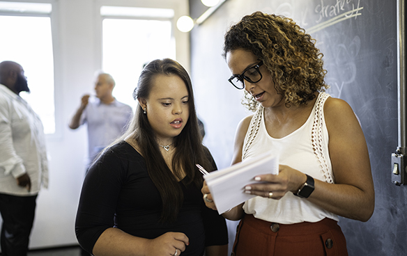

Capacitación en liderazgo

Tu gente crea tu ventaja
Las organizaciones exitosas comprenden que crear una cultura de alto desempeño implica brindar un profundo apoyo a los líderes. Pero, dado que sus líderes deben desarrollar y mantener un conjunto amplio y dinámico de habilidades (como escuchar, pensar de manera crítica, motivar, realizar evaluaciones y valoraciones, practicar las mejores prácticas de empatía e inclusión y modelar estrategias de colaboración y comunicación efectivas), necesitan un apoyo integral para prosperar.
Nuestros sólidos programas de desarrollo de liderazgo y capacitación en diversidad, equidad e inclusión ofrecen oportunidades transformadoras para impulsar a su personal por delante de la competencia. Cuando su liderazgo prospera, también lo hacen sus resultados.
Nuestras soluciones de desarrollo de liderazgo
Sin importar el estado actual o su proceso de desarrollo de habilidades, nuestro conjunto de soluciones de desarrollo de liderazgo y DEI se puede adaptar para satisfacer las necesidades de su organización y las de sus futuros creadores de diferencias.
Programas de liderazgo digital

Nuestra suite de liderazgo digital está diseñada cuidadosamente para desarrollar líderes eficaces en todos los niveles de su organización. Entre nuestras tres ofertas (Leadership Essentials, Leadership Evolution y Leadership Acceleration), sus líderes más nuevos y más experimentados desarrollarán las habilidades necesarias para impulsar un alto rendimiento en su organización.
- Fundamentos de liderazgo: para nuevos líderes
- Evolución del liderazgo: para líderes de nivel medio
- Aceleración del liderazgo: para líderes experimentados
Programas de liderazgo ILT (Integral Leadership Training)
Tal vez el mayor desafío para la fuerza laboral actual sea la expectativa de mejores líderes y de un mejor liderazgo. En todos los niveles, las organizaciones necesitan líderes que puedan inspirar a las personas y formar equipos inclusivos y de alto rendimiento.
- Líderes experimentados
- Líderes de primera línea
- Líderes de alto potencial
- Liderazgo propio
Capacitación y programas de DEI

Las culturas laborales inclusivas impulsan mejores resultados comerciales, mejoran la contratación, aceleran la innovación, aumentan la retención de empleados de alto rendimiento y consolidan relaciones leales con los clientes y la fuerza laboral. Como líder mundial y pionero en capacitación y soluciones de DEI, queremos ayudarlo a construir una cultura laboral productiva e inclusiva.
Desarrollo profesional

Cuando las organizaciones invierten en el desarrollo profesional, demuestran un compromiso a largo plazo que beneficia a la fuerza laboral y a la empresa. Nuestra investigación muestra que ayudar a los empleados a diseñar planes de crecimiento profesional aumenta los niveles de retención y compromiso al garantizar que sus trabajos incluyan un trabajo significativo e interesante.
Entrenamiento
El trabajo que realizan las personas y la forma en que trabajan están cambiando. Los líderes deben estar a la vanguardia de esta transformación, guiarla y organizarla para optimizar el rendimiento. Las organizaciones globales necesitan capacitar y desarrollar fuerzas de trabajo maravillosamente diversas que incluyan a empleados con diferentes actitudes y expectativas sobre el trabajo.